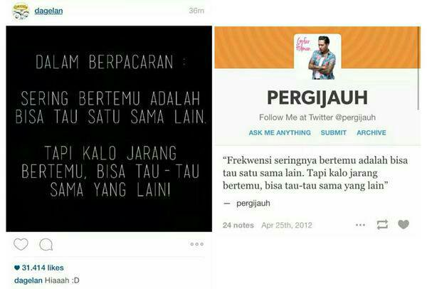
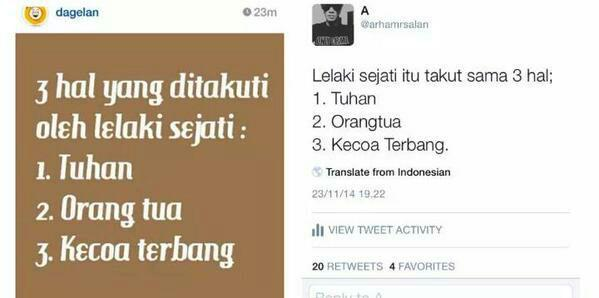
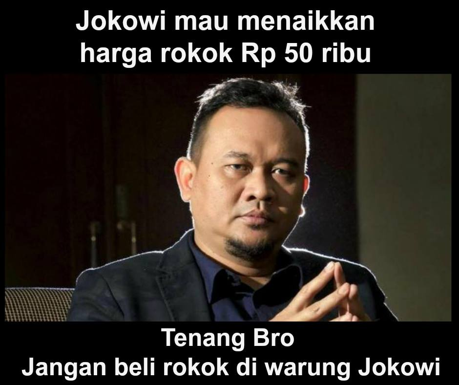

Apakah kicauan-kicauan di Twitter.com mendapatkan perlindungan hak cipta?
Twitter adalah layanan jejaring sosial berupa mikroblog yang memungkinkan penggunanya untuk membagikan teks, gambar (juga mengakomodasi format .gif dan Vines), dan video. Pengguna hanya dapat menulis dan membagikan 140 karakter teks dalam sekali kicau (tweet). Selain itu pengguna juga dapat berkomunikasi dengan pengguna lain dengan memilih perintah mention, atau membagikan kembali kicauan pengguna lain dengan mengklik perintah retweet.
Cara penyampaian materi lawak oleh para pelawak di Indonesia telah begitu berkembang. Lawakan dapat disampaikan dari atas panggung, melalui perantara audio/visual seperti radio dan televisi, atau lewat akun media sosial, yang salah satunya adalah twitter.
Bulan Juli tahun 2015 lalu dunia pertwitteran dihebohkan dengan isu penggunaan materi lawak-materi lawak tanpa menyebutkan sumber dan izin dari pembuat materi. Seorang pelawak tunggal @ernestprakasa bercerita mengenai hal tersebut lewat kicauan dari akun twitter pribadinya. Ia menyatakan bahwa penggunaan materi-materi tanpa izin tersebut dilakukan oleh Dagelandotco. Sebelum sampai ke meja hijau, kasus ini diselesaikan secara baik-baik dengan permintaan maaf yang dibuat secara tertulis oleh pihak Dagelandotco dengan menyebut kesalahannya sebagai pelanggaran hak kekayaan intelektual .
Saat itu @ernesprakasa juga mengajak para pengikutnya di twitter untuk mengumpulkan hasil penggunaan konten tanpa izin yang dilakukan oleh Dagelandotco. Ajakan tersebut bertujuan untuk mengumpulkan alat bukti, jika saja ternyata kasus tersebut dapat dibawa ke pengadilan. Sebelum berjalan lebih jauh, kami akan menunjukan dua alat bukti yang dilaporkan oleh pengikut Ernest Prakasa di twitter:


Alat bukti-alat bukti tersebut, serta pengakuan dari Dagelandotco, menggiring kami pada sebuah pertanyaan:
“Apakah kicauan di twitter merupakan obyek perlindungan hak cipta?”
Unsur Hak Cipta Kicauan di Twitter
Teks
Ciptaan seperti buku merupakan obyek perlindungan hak cipta. Salah satu unsur yang mendapat perlindungan adalah unsur tekstual dari buku tersebut. Sama halnya dengan buku, kicauan di twitter juga memiliki unsur tekstual.
Namun, apakah kicauan di twitter merupakan hal yang dimaksud sebagai Ciptaan oleh Undang-Undang Hak Cipta (UUHC)?
Apakah susunan kata sepanjang 140 karakter tersebut memiliki nilai untuk dilindungi oleh ketentuan hak cipta?
Angka 3 Pasal 1 bagian Ketentuan Umum UUHC 2014 menyebutkan bahwa “ciptaan adalah setiap hasil karya cipta di bidang ilmu pengetahuan, seni, dan sastra yang dihasilkan atas inspirasi, kemampuan, pikiran, imajinasi, kecekatan, keterampilan, atau keahlian yang diekspresikan dalam bentuk nyata”.
Bisa saja suatu kicauan dianggap sebagai Ciptaan seperti yang dimaksud oleh UUHC2014. Misalnya, kicauan itu berisi buah pikiran seorang ilmuwan, sastrawan, atau seniman yang memiliki unsur intelektual. Yang kemudian buah pikiran-buah pikiran tersebut diwujudkan secara nyata dalam bentuk teks, melalui twitter dan/atau hanya di twitter.
Namun, sebaiknya diperhatikan juga bahwa tidak semua kicauan di twitter memiliki elemen-elemen tersebut.
Banyak juga kita jumpai kicauan-kicauan berupa lelucon, percakapan ringan, atau curahan-curahan hati yang tidak bisa disampaikan jika tidak di twitter. Hal-hal yang disebutkan sebelumnya ini belum tentu memenuhi kriteria perbidangan yang ditentukan UUHC, seperti ilmu pengetahuan, seni, dan sastra atau unsur intelektual yang dimaksud oleh UUHC. Sehingga masih terdapat kemungkinan unsur tekstual yang seperti itu, untuk menjadi obyek perlindungan hak cipta, asal dapat memenuhi kriteria yang disyaratkan oleh UUHC.
Apabila kita merujuk pada kasus @ernestprakasa vs. @Dagelandotco, hal yang dibahas sebagai ciptaan adalah materi lawak. Materi lawak yang berkualitas tentu dibuat dengan modal kemampuan berpikir, berimajinasi, serta kecekatan seorang manusia. Selain itu, terdapat banyak kemungkinan materi-materi lawak tersebut mengandung elemen perbidangan yang disebutkan oleh UUHC. Jika obyek perlindungan hak cipta merupakan ide yang sudah diwujudkan secara nyata, sebenarnya kita juga menganggap kita ide tersebut dikicaukan di twitter, ide tersebut sudah berwujud nyata.
Telah disebutkan sebelumnya bahwa twitter merupakan layanan jejaring sosial berupa mikroblog. Yang membedakan mikroblog dengan blog konvensional, dalam perannya sebagai layanan jejaring sosial, hanya banyak karakter yang dapat dibagikan saja. Selebihnya kita bisa menganggap konten yang dibagikan oleh pengguna di kedua model layanan tersebut memiliki kapasitas yang sama untuk dilindungi. Dengan begitu, teks-teks yang dibagikan di twitter mempunyai kesempatan untuk dilindungi seperti teks-teks lain yang beredar di dalam jaringan.
Tentu saja diikuti dengan segala ketentuan terkait perlindungan ciptaan teks dari UUHC, dengan syarat bahwa kicauan itu juga merupakan materi asli, atau karya orisinal.
Gambar, Video, dan Vines
Karya fotografi, potret, sinematografi (video), dan karya seni rupa (lukisan) jelas merupakan obyek perlindungan hak cipta. Obyek-obyek ini juga diatur oleh pasal yang sama dengan teks, yaitu pasal 40 UUHC 2014. Twitter memungkinkan penggunanya untuk mengunggah satu atau beberapa berkas gambar dalam satu kicauan. Bentuk pelanggaran hak cipta dalam aktivitas ini dapat dilakukan oleh pengakses gambar maupun pengunggah gambar. Twitter memiliki kebijakannya sendiri untuk mengatasi pengunggahan gambar yang merupakan pelanggaran hak cipta oleh pengguna. Pelanggaran hak cipta juga dapat terjadi pada gambar buatan sendiri atau materi asli yang diunggah pengguna dan digunakan oleh pihak lain tanpa izin pengguna untuk kepentingan tertentu. Pola pelanggaran dan penegakan hukum dalam aktivitas berbagi gambar, video, dan potongan video dengan menggunakan Vines di twitter terbilang normal dan sama saja dengan situs lainnya. Namun penjelasan ini bertujuan sebagai pengingat bahwa hal-hal ini juga merupakan aspek hak cipta yang ada di twitter, selain teks.
Meskipun bukan di twitter, materi lawak dari Cak Lontong ini dapat dijadikan contoh materi lawak yang diwujudkan dalam bentuk gambar, dan disebarkan melalui media sosial.

Tweet Dengan Lisensi Terbuka?
Apabila telah ditetapkan bahwa kicauan di twitter merupakan obyek perlindungan hak cipta, maka aktivitas membagikan dan menyebarluaskan sebuah kicauan harus mengikuti ketentuan-ketentuan yang ada dari UUHC. Tentu saja seorang pengguna karya diharuskan untuk mendapatkan izin langsung dari pencipta dalam penggunaan karya tersebut. Kemudian, fitur retweet atau quote yang memungkinkan pengguna untuk membagikan kembali kicauan pengguna lain, akan berubah nilainya. Meskipun, twitter menyediakan fitur untuk mengontrol akses menuju akun twitter mereka, serta fitur untuk mengontrol penggunaan kicauan mereka oleh pengguna lainnya. Artinya, pengguna yang tidak mengunci kicauannya, berarti telah mengizinkan pengguna lain untuk menggunakan “properti intelektual”nya, sejauh yang telah disediakan oleh fasilitas retweet dan quote.
Selain itu, sama halnya dengan beberapa situs lain, ketika satu kicauan dapat disebut sebagai obyek perlindungan hak cipta, di mana satu kicauan dapat mengandung unsur teks, gambar, atau video, dan jika terdapat pengguna yang menghendaki konten-kontennya sebagai konten terbuka, hal ini dapat menjadi faktor pendorong twitter untuk menyediakan platform lisensi terbuka seperti Creative Commons dalam pengakomodasian aktivitas berbagi konten di situs tersebut. Lisensi ini dapat memfasilitasi pencipta yang membagikan kontennya di twitter dengan penjelasan tentang apa yang boleh dan tidak boleh dilakukan oleh pengguna terhadap suatu ciptaan, sambil tetap membuka kesempatan agar para pengguna dapat membagikan dan/atau memanfaatkan konten tersebut.
Sumber:
Can You Copyright A Tweet? - TechnoLlama oleh Andres
Komentar Geram @ernestprakasa soal @Dagelandotco - Chirpstory oleh @tumbenlucu
Tags:
Oleh: Hilman Fathoni
31 Aug 2016Kategori:
Berita Terbaru
- Lokakarya Hak Cipta dan Lisensi Creative Commons di Pekanbaru
- Pengumuman Resmi: Hasil Akhir Training of Trainers Creative Commons Indonesia
- Literatur tentang Model Bisnis Terbuka "Made With CC"
- Data dan Artikel Ilmiah Terbuka dari PLOS!
- Konten Format Model 3 Dimensi Berilsensi CC di Platform Sketchfab